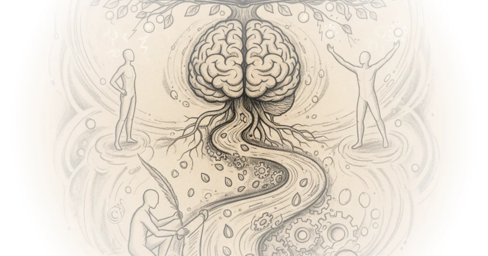

In an era where artificial intelligence promises to eliminate the friction of thought, L. M. Sacasas offers a startling counter-intuition: the very act of struggling to find the right words is not a bug in the human system, but the feature that builds our minds. While most commentary on large language models focuses on their speed or their ability to generate code, Sacasas argues that outsourcing the "labor of articulation" risks hollowing out the internal resources necessary for wisdom and selfhood. This is not a Luddite rant, but a philosophical excavation of why we feel increasingly "pancake thin" as we offload our memory to the cloud.
The Ancient Warning
Sacasas anchors the modern anxiety about AI in a 2,400-year-old dialogue, reminding us that the fear of technology eroding human capacity is not new. He revisits Plato's Phaedrus, where the inventor-god Theuth claims writing will improve memory, only to be rebuked by King Thamus. Sacasas writes, "Those who acquire it will cease to exercise their memory and become forgetful; they will rely on writing to bring things to their remembrance by external signs instead of by their own internal resources." This historical parallel is effective because it strips away the novelty of the current moment, revealing a recurring pattern where we trade internal cultivation for external convenience. The author notes that while Thamus was a "one-eyed prophet" who failed to see writing's benefits, he was correct about the cost: the shift from true memory to mere recollection.

The piece suggests that we are currently surrounded by modern versions of Theuth, eager to sell us tools that promise wisdom without the hard work of instruction. Sacasas observes, "We are currently surrounded by throngs of zealous Theuths, one-eyed prophets who see only what new technologies can do and are incapable of imagining what they will undo." This framing forces the reader to confront the asymmetry of our current tech discourse: we are brilliant at predicting what a tool can do, but terrible at anticipating what it will undo in the human psyche. A counterargument worth considering is that this view romanticizes the struggle of pre-digital life, ignoring how writing actually democratized knowledge and allowed for complex thought that oral culture could not sustain. However, Sacasas's point is not to reject writing, but to recognize that the next step of externalization requires a new level of vigilance.
The error is not in his claim that writing will damage memory and create false wisdom. It is demonstrable that writing has had such an effect. Thamus' error is in his believing that writing will be a burden to society and nothing but a burden.
The Plausibility of Outsourcing
Moving from history to the present, Sacasas argues that the rise of large language models (LLMs) is not just a technical inevitability but a social one. He introduces the sociological concept of a "plausibility structure," suggesting that our current environment makes the outsourcing of thought feel natural. He writes, "The existing soulless and bureaucratic context of much of our writing—the filling out of forms, thoughtless school exercises, endless email—constitutes a plausibility structure for LLMs." When much of our daily writing is already rote and meaningless, the leap to letting a machine do it entirely seems logical. The author contends that we have already conditioned ourselves to view writing as a transactional burden rather than a generative act.
This is where the argument becomes most urgent. Sacasas points out that the technical precondition for AI was the digitization of writing, but the psychological precondition is our willingness to treat language as a commodity. He asks, "What do I have to believe to adopt this or that new technology?" The answer, he suggests, is a belief that the labor of articulation is separate from the thinking itself. Critics might argue that efficiency is a valid goal and that freeing humans from boilerplate allows for higher-level creativity. Yet, Sacasas warns that the line between "boilerplate" and "personal expression" is porous, and the tool does not distinguish between the two.
The Labor of Articulation
The core of Sacasas's thesis rests on the definition of writing not as transcription, but as a process of discovery. He argues that when we use an LLM to draft a wedding toast or a difficult email, we are not just saving time; we are skipping the cognitive work that shapes our understanding. "Articulation is not dictation, articulation constitutes our perception of the world," Sacasas writes. This is a profound claim: the struggle to find the word is the struggle to define the feeling. By bypassing this struggle, we bypass the formation of the self.
The author draws on philosopher Talbot Brewer to describe the consequence of this outsourcing: it takes the self "out of play." Sacasas elaborates, "In the labor of articulation, we put ourselves in play, with all the risks, rewards, burdens, challenges, and consolations that entails. To outsource the labor of articulation is to sideline ourselves." This metaphor of being "sidelined" is powerful because it suggests that the danger of AI is not that it will replace us with a superior intelligence, but that we will voluntarily step aside from the very activity that makes us human. The piece suggests that without the internal friction of articulation, we lose the ability to interpret our own experiences.
The Pancake Self
In the conclusion, Sacasas warns of a shift in the architecture of the human mind, moving from a "cathedral-like" structure of dense, interconnected knowledge to something far more fragile. He quotes avant-garde playwright Richard Foreman to illustrate this decline: "I see within us all (myself included) the replacement of complex inner density with a new kind of self-evolving under the pressure of information overload... as we all become 'pancake people'—spread wide and thin as we connect with that vast network of information accessed by the mere touch of a button." This imagery of the "pancake person" is the piece's most evocative contribution, visualizing the loss of depth that occurs when we rely entirely on external databases for our internal resources.
The author contends that true knowledge is not the aggregation of facts, but the personal construction of relationships between those facts. "This knowledge, carried within, shapes our ongoing encounters with the world, building a cascading experience of 'understanding in light of,' a form of poetic knowledge," Sacasas writes. The implication is that if we do not curate our memory as carefully as we curate our digital feeds, we risk becoming hollow vessels for information, unable to generate original thought or genuine wisdom. The piece ends with a call to action: we must re-evaluate the labor of articulation and reclaim the internal work of thinking.
New technologies challenge us. If we are up to the challenge, they give us the opportunity to reconsider things we have taken for granted. They invite us to rethink and recalibrate our assumptions about what it means to be human.
Bottom Line
Sacasas's strongest argument is the reframing of AI adoption not as a technical upgrade, but as a surrender of the cognitive labor required to build a coherent self. The piece's greatest vulnerability lies in its potential to sound elitist, assuming that the "labor of articulation" is a luxury rather than a necessity for everyone, regardless of time or resources. However, the warning remains vital: if we allow machines to do the work of thinking for us, we may find that we no longer have the internal resources to know who we are.